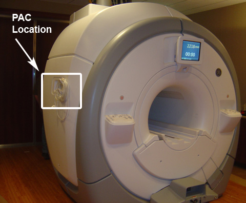
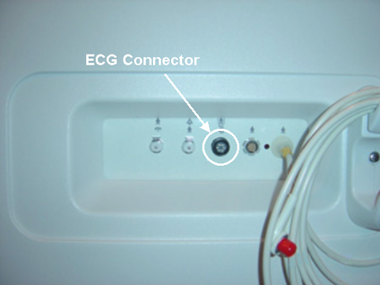
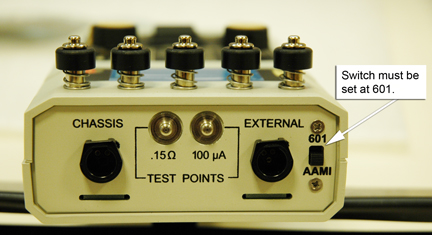

Operating Documentation
Direction 5670000, Rev# 1
Optima MR450w 1.5T Service Methods
Module Version 5.0, Version Date 12/7/09
Operating Documentation |
| Required Persons | Preliminary Reqs | Procedure | Finalization |
|---|---|---|---|
| 1 | Not Applicable | 10 mins | Not Applicable |
The Safety Analyzer Kits are slowly being upgraded with the Dale 601/601E Safety Analyzer as the units are sent in for calibration. This procedure is now divided into two sections one for the old model, Dale 600/600E and the second for the new model Dale 601/601E.
| Item | Qty | Effectivity | Part# | Manufacturer | |
|---|---|---|---|---|---|
| Dale 600/601 (120VAC) Safety Analyzer (Regional Tool) | 1 | the Americas | 46-328406G1 | - | |
| Dale 600E/601E (220VAC) Safety Analyzer (Regional Tool) | 1 | Europe and Asia | 46-328406G2 | - | |
| ||||
| Strong Magnetic Field! | ||||
| Ferrous materials can become dangerous projectiles in the presence of the magnetic field Produced by the Magnet. | ||||
| Do not Bring any ferromagnetic tools or equipment into the magnet room. |
| ||||
| The Dale Safety Analyzer may only be taken within 20 inches (51 cm) of the Patient Monitor Accessory hook on the left side of the magnet enclosure. Getting closer to the Magnet will affect the Dale Safety Analyzer, thereby altering the tool’s ability to take an accurate measurement. | ||||
| ||||
| Strong Magnetic Field! | ||||
| Ferrous materials can become dangerous projectiles in the presence of the magnetic field Produced by the Magnet. | ||||
| Do not Bring any ferromagnetic tools or equipment into the magnet room. |
Print out and record the leakage current data in the supplied
Data Sheet.  Table 1 is a reference of what is contained within the Data Sheet.
Table 1 is a reference of what is contained within the Data Sheet.
Table 1: PAC-II Leakage Current Measurements
| LEAD SELECT POSITION | METER READING NORMAL POSITION (microamps) | METER READING REVERSE POSITION (microamps) |
|---|---|---|
| Patient (Lead to Ground) Leakage Current | ||
| Right Leg (RL) | ||
| Right Arm (RA) | ||
| Left Arm (LA) | ||
| Left Leg (LL) | ||
| Patient (Lead to Lead) Auxillary Current | ||
| RL | ||
| RA | ||
| LA | ||
| LL | ||
| M.A.P. (Isolation Tests) | ||
| ALL LEADS M.A.P. Test | ||
| ||||
| The Dale Safety Analyzer may only be taken within 20 inches (51 cm) of the Patient Monitor Accessory hook on the left side of the magnet enclosure. Getting closer to the Magnet will affect the Dale Safety Analyzer, thereby altering the tool’s ability to take an accurate measurement. | ||||
Plug the Analyzer into a power source in the magnet room, which allows access to the Patient Monitor Accessory hook on the left side of the magnet enclosure while staying at least 20 inches (51 cm) from the magnet.
At Patient Monitor Accessory panel, connect the Patient Lead cable and the Cardiac Lead Set at the ECG connector. See Illustration 2.
Illustration 1: Location of the PAC

Illustration 2: Location of Patient Monitor Panel

Connect cardiac leads to Dale 600/600E (46-328406G1) (see Illustration 3).
Illustration 3: Dale 600 Analyzer

Place the [Neutral] Button in the CLOSED position.
Place the [Polarity] switch in the NORMAL position.
On the Dale 600/600E set the main selector switch to LEAKAGE - LEAD-GND.
Move the LEAD switch through the positions shown in Table 2. Verify leakage current displayed on meter is less than 50 micro amps and record the values in the Data Sheet.
| NOTE: | Typically the Lead to Ground and Lead-to-Lead readings are close to zero and less than 50 microamps. Measurements exceeding the 50 micro amps indicate an issue in the corresponding lead. |
Table 2: Leakage Current Measurements
| LEAD SELECT POSITION |
| RL |
| RA |
| LA |
| LL |
On the Dale 600/600E set the main selector switch to LEAKAGE - LEAD-LEAD.
Move LEAD switch through the positions shown in Table 2. Verify leakage current displayed on meter is less than 50 micro amps and record the values in the Data Sheet.
On the Dale 600/600E set the main selector switch to LEAKAGE - LEAD-ISO.
Make sure that the leads are not touching the floor.
Move the LEAD switch to ALL LEADS.
Press button [ISO TEST] and record the meter reading in Data Sheet. This reading must be less than 50 micro amps.
| ||||
| Strong Magnetic Field! | ||||
| Ferrous materials can become dangerous projectiles in the presence of the magnetic field Produced by the Magnet. | ||||
| Do not Bring any ferromagnetic tools or equipment into the magnet room. |
Print out and record the leakage current data in the supplied
Data Sheet.  Table 3is a reference of what is contained
within the Data Sheet.
Table 3is a reference of what is contained
within the Data Sheet.
Table 3: PAC-II Leakage Current Measurements
| LEAD SELECT POSITION | METER READING NORMAL POSITION (microamps) | METER READING REVERSE POSITION (microamps) |
|---|---|---|
| Patient (Lead to Ground) Leakage Current | ||
| Right Leg (RL) | ||
| Right Arm (RA) | ||
| Left Arm (LA) | ||
| Left Leg (LL) | ||
| Patient (Lead to Lead) Auxillary Current | ||
| RL | ||
| RA | ||
| LA | ||
| LL | ||
| M.A.P. (Isolation Tests) | ||
| ALL LEADS M.A.P. Test | ||
| ||||
| The Dale Safety Analyzer may only be taken within 20 inches (51 cm) of the Patient Monitor Accessory hook on the left side of the magnet enclosure. Getting closer to the Magnet will affect the Dale Safety Analyzer, thereby altering the tool’s ability to take an accurate measurement. | ||||
Plug the Analyzer into a power source in the magnet room, which allows access to the Patient Monitor Accessory hook on the left side of the magnet enclosure while staying at least 20 inches (51 cm) from the magnet.
At Patient Monitor Accessory panel, connect the Patient Lead cable and the Cardiac Lead Set at the ECG connector. See Illustration 4.
Illustration 4: Location of Patient Monitor Panel
Verify that the Test Load selector switch is set at 601 for IEC601.1 (see Illustration 5).
Illustration 5: Test Load Selector Switch Setting

Connect the ECG leads to Dale 601/601E (see Illustration 6). Not all systems will have the Cardiac (C) lead.
Illustration 6: Dale 601/601E Analyzer: Connecting Leads

Place the [L2 ] (Neutral) Switch in the CLOSED position (see Illustration 7).
Illustration 7: Dale 601/601E Safety Analyzer

| NOTE: | Be sure to pause in the OFF (Middle) position when switching polarity from normal to reverse |
Place the [Outlet] (Polarity) switch in the NORMAL position.
On the Dale 601/601E set the Function Switch to PATIENT LEAD LEAKAGE.
Move Lead switch through the lead positions shown in Table 4. Verify leakage current displayed on meter is less than 50 micro amps and record the values in the Data Sheet.
| NOTE: | Typically the Patient Lead Leakage (Lead to Ground) and the Patient Aux Current (Lead-to-Lead) readings are close to zero and less than 50 microamps. Measurements exceeding the 50 micro amps indicate an issue in the corresponding lead. |
Table 4: Lead Positions
| LEAD SELECT POSITION |
|---|
| RL |
| RA |
| LA |
| LL |
On the Dale 601/601E set the main selector switch to PATIENT AUX CURRENT.
Move Lead switch through the lead positions shown in Table 4. Verify that the current displayed on meter is less than 50 micro amps and record the values in the Data Sheet.
On the Dale 601/601E set the main selector switch to M.A.P. (Mains on Applied Parts sink current).
Make sure that the leads are not touching the floor.
Move the Lead switch to measure All Leads, which is the 6th position all the way to right on the switch.
On the LIFT/Ground/MAP Switch, press and hold M.A.P. Verify that the current displayed on meter is less than 50 micro amps and record the values in the Data Sheet.
| NOTE: | Be sure to pause in the OFF (Middle) position when switching polarity from normal to reverse. |
| ||||
| Strong Magnetic Field! | ||||
| Ferrous materials can become dangerous projectiles in the presence of the magnetic field Produced by the Magnet. | ||||
| Do not Bring any ferromagnetic tools or equipment into the magnet room. |
| ||||
| The Dale Safety Analyzer may only be taken within 20 inches (51 cm) of the Patient Monitor Accessory hook on the left side of the magnet enclosure. Getting closer to the Magnet will affect the Dale Safety Analyzer, thereby altering the tool’s ability to take an accurate measurement. | ||||
Disconnect the Cardiac Lead Set from Dale Safety Analyzer.
Remove the Patient Lead cable from the ECG Connector.
Unplug the Dale Safety Analyzer.